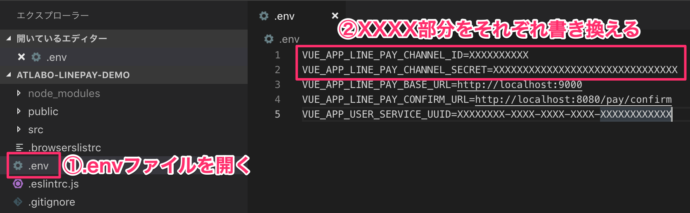
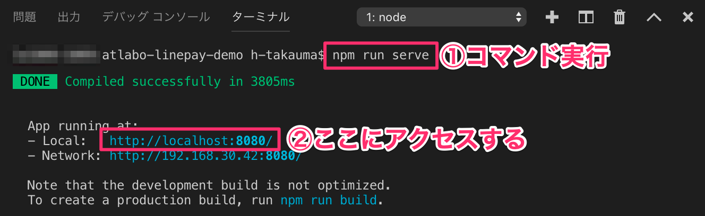
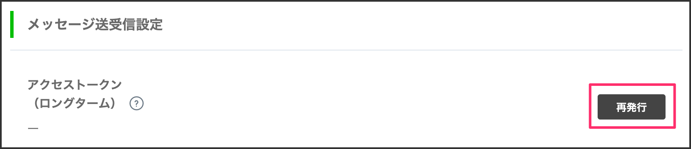
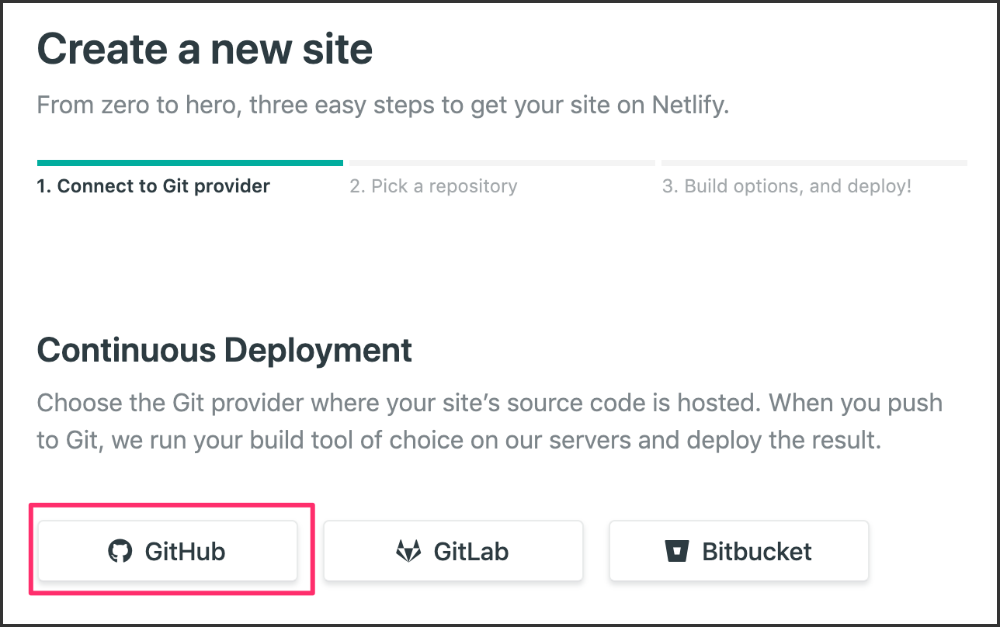

1-1. LINE Payのサンドボックス環境を作成する
下記URLからサンドボックス環境を作成します。
https://pay.line.me/jp/developers/techsupport/sandbox/creation?locale=ja_JP
メールアドレスを入力して［Submit］ボタンをクリックします。
1-2. LINE Pay Homeにログインする
設定したメールアドレスにログインするためのIDとパスワードが送られてきます。LINE Pay Home 部分をクリックして、ログインします。
メールに記載されているIDとパスワードでログインします。
左側メニューの決済連動管理にある、連動キー管理をクリックして、メールに記載されているパスワードを入力してから、［確認］ボタンをクリックします。
1-3. IDとSecret Keyをメモする
Channel ID と Channel Secret Key の値をそれぞれメモしておきます。

2-1. GitHubからプロジェクトを取得する
ローカルの環境にプロジェクトを構築して実際の決済処理の動きを確認してみましょう。
適当なフォルダを作成して、GitHubからクローンしてきます。
Macな方
$ cd ~/Documents
$ git clone -b step1 https://github.com/gaomar/atlabo-linepay-demo.git
Windowsな方
> cd %homepath%\Documents\
> git clone -b step1 https://github.com/gaomar/atlabo-linepay-demo.git
2-2. Visual Studio Codeに展開する
Visual Studio Codeを開いて、ワークスペースに atlabo-linepay-demo のフォルダを指定します。
表示-ターミナルを開いてください
下記コマンドを実行してインストールしてください。
$ npm install
2-3. 起動確認
インストールできたら下記コマンドを実行してブラウザで確認してください。
$ npm run serve
無事起動できたらこのURLで確認してください。
http://localhost:8080/
起動確認できたらCTRL + C で終了してください。
2-4. モジュールを追加する
LINE Payを実行するために必要なモジュールをインストールします。
下記コマンドを実行してモジュールをインストールしてください。
$ npm i -s line-pay netlify-lambda uuid
2-5. 環境変数にLINE Payの設定をする
.envというファイルに環境変数を設定します。1-3で取得したChannel ID と Channel Secret Key の値を書き込みます
VUE_APP_LINE_PAY_CHANNEL_ID=XXXXXXXXXX
VUE_APP_LINE_PAY_CHANNEL_SECRET=XXXXXXXXXXXXXXXXXXXXXXXXXXXXXXX

2-6. 決済処理を記述する
LINE Payの決済処理を記述します。src/lambda/pay.js ファイルを開いて、下記プログラムを記述します。
// LINE Pay処理を実装する
"use strict"
import { URLSearchParams } from 'url'
const uuid = require("uuid/v4")
const line_pay = require("line-pay")
const pay = new line_pay({
channelId: process.env.VUE_APP_LINE_PAY_CHANNEL_ID,
channelSecret: process.env.VUE_APP_LINE_PAY_CHANNEL_SECRET,
isSandbox: true // サンドボックス環境
})
exports.handler = function(event, context, callback) {
const body = event.body
let params = new URLSearchParams(body)
const type = params.get('type')
const headers = {
'Access-Control-Allow-Headers': '*',
'Access-Control-Allow-Origin': '*',
'Access-Control-Allow-Methods': 'POST',
'Content-Type': 'application/json'
}
if (type === 'reserve') {
// 決済予約
let options = {
productName: "ロック解除",
amount: 1, // 金額（この場合は1円）
currency: "JPY", // 日本円
orderId: uuid(),
confirmUrl: process.env.VUE_APP_LINE_PAY_CONFIRM_URL
}
pay.reserve(options).then((response) => {
let reservation = options
reservation.transactionId = response.info.transactionId
reservation.paymentUrl = response.info.paymentUrl.web
callback(null, {
statusCode: 200,
body: JSON.stringify(reservation),
headers: headers
})
})
} else if (type === 'confirm') {
// 決済処理
const transactionId = params.get('transactionId')
const reservations = JSON.parse(params.get('reservations'))
let confirmation = {
transactionId: transactionId,
amount: reservations.amount,
currency: reservations.currency
}
pay.confirm(confirmation).then((response) => {
callback(null, {
statusCode: 200,
body: '決済完了しました！',
headers: headers
})
})
} else {
callback(null, {
statusCode: 400,
body: 'APIエラー',
headers: headers
})
}
}
2-7. 画面遷移を有効にする
src/router.js ファイルを編集して、決済画面に遷移できるようにします。
16行目と27行目をコメントアウトします。
2-8. ローカル環境で実行する
ターミナルから下記コマンドを実行します。
$ npm run serve

もう一つ新しいターミナルを開いて、下記コマンドを実行します。
$ npm run lambda
Lambda server is listening on 9000 // ←これが出てくればOK
http://localhost:8080にアクセスすると決済処理を確認することができます。
携帯からQRコードを読み取っても決済することができます。
※サンドボックス環境なので、実際に決済はされません！
確認できたら、Ctrl + C でプログラムを終了しておいてください。
2-9. serveoで外部からアクセスしてみる
ターミナルをひらいて、下記コマンドを実行します。
8080ポートを指定します。
もう一つ新しいターミナルをひらいて下記コマンドを実行します。
9000ポートを指定します。
$ npx miso-develop/serveo xxxxx 9000
Forwarding HTTP traffic from https://xxxxxx.serveo.net // httpsの値をコピー
発行されたURLを.envファイルに記述します。
VUE_APP_LINE_PAY_BASE_URL | https://xxxxxx.serveo.net |
VUE_APP_LINE_PAY_CONFIRM_URL | https://xxxxxx.serveo.net/pay/confirm |
8080で発行されたserveoのURLにアクセスします。
3-1. LINEチャネルを作成する
いよいよLINE Thingsのキモの部分を作成していきます。
LINE Developerにアクセスしてください。
※ログインする際はLINEアプリで使っているアカウントと同一のものでログインしてください！
https://developers.line.biz/ja/
プロバイダーをまだ持っていない方は新規で作成してください。
新規チャネルを作成します。
MessagingAPIを選択します。
①アプリ名 | M5Pay |
②説明 | M5Pay |
③大業種 | 個人 |
③小業種 | 個人（その他） |
④メールアドレス | ご自身のメールアドレス |
同意するをクリック
2つのチェックを入れて作成ボタンをクリックします。

作成されたチャネルをクリックします。
3-2. アクセストークンを発行する
少し下にスクロールするとメッセージ送信設定という部分があります。
そこの［再発行］ボタンをクリックします。

出てきたポップアップはそのまま［再発行］ボタンをクリックします。
発行されたアクセストークンは後で使うのでメモしておきましょう。
3-3. LINE Botと友だちになる
下にスクロールするとQRコードがあるので、LINEアプリからQRを読み取って、
Botと友だちになっておいてください。
3-4. LIFFを設定する
LIFFとはLINE Front-end Frameworkの略で、LINE内で動作するウェブアプリのプラットフォームです。
表示できるサイズは3種類あります。用途に合わせて使い分けましょう。
LIFFタブをクリックして、作成ボタンをクリックします。
①名前 | M5Pay |
②サイズ | Full |
③エンドポイントURL | https://xxxxxx.serveo.net |
④Scope | 2つチェックを入れる |
⑤オプション | 共にONにする |
4-1. サービスUUIDを生成する
のびすけさんが作ったツールをありがたく使います。
下記にアクセスしてください。
https://n0bisuke.github.io/linethingsgen/
左側メニューのSettingをクリックして、3-2で生成したアクセストークンを貼り付けます。
［保存］ボタンをクリックします。
左側メニューのCreate Productをクリックして、プルダウンメニューから3-4で作成したLIFFアプリを指定します。
トライアルプロダクトの名前を入力して［作成］ボタンをクリックします。
生成されたサービスUUIDをメモしておきましょう。
5-1. .envファイルを修正する
.envファイルのVUE_APP_USER_SERVICE_UUIDに先程生成されたサービスUUIDをコピペします。
5-2. プログラムを修正する
Vue.js側のプログラムを修正します。src/views/Confirm.vue
下記コードをコピペしてください。
コードはこちらからもコピペできます
https://raw.githubusercontent.com/gaomar/atlabo-linepay-demo/master/src/views/Confirm.vue
<template>
<div class="confirm">
<h1>{{status}}</h1>
<h2>{{bleStatus}}</h2>
</div>
</template>
<script>
export default {
data () {
return {
status: '',
USER_SERVICE_UUID: process.env.VUE_APP_USER_SERVICE_UUID,
LED_CHARACTERISTIC_UUID: 'E9062E71-9E62-4BC6-B0D3-35CDCD9B027B', /* トライアルは固定値 */
bleConnect: false,
bleStatus: 'デバイス未接続',
characteristic: '',
code: ''
}
},
methods: {
confirmAction: function () {
if (!this.$route.query.transactionId){
throw new Error("Transaction Id not found.")
}
// Retrieve the reservation from database.
var reservation = JSON.parse(sessionStorage.getItem(this.$route.query.transactionId))
if (!reservation){
throw new Error("Reservation not found.")
}
var params = new URLSearchParams()
params.set('type', 'confirm')
params.set('transactionId', this.$route.query.transactionId)
params.set('reservations', JSON.stringify(reservation))
axios.post(process.env.VUE_APP_LINE_PAY_BASE_URL + '/.netlify/functions/pay', params)
.then(response => {
sessionStorage.clear()
this.status = '決済完了しました！'
this.code = '1234'
const ch_array = this.code.split("");
for(let i = 0; i < 16; i = i + 1) {
ch_array[i] = (new TextEncoder('ascii')).encode(ch_array[i]);
}
this.characteristic.writeValue(new Uint8Array(ch_array)
).catch(error => {
this.bleStatus = error.message
})
})
},
// BLEが接続できる状態になるまでリトライ
liffCheckAvailablityAndDo: async function (callbackIfAvailable) {
try {
const isAvailable = await liff.bluetooth.getAvailability();
if (isAvailable) {
callbackIfAvailable()
} else {
// リトライ
this.bleStatus = `Bluetoothをオンにしてください。`
setTimeout(() => this.liffCheckAvailablityAndDo(callbackIfAvailable), 10000)
}
} catch (error) {
this.bleStatus = `Bluetoothをオンにしてください。`
}
},
// サービスとキャラクタリスティックにアクセス
liffRequestDevice: async function () {
const device = await liff.bluetooth.requestDevice()
await device.gatt.connect()
const service = await device.gatt.getPrimaryService(this.USER_SERVICE_UUID)
service.getCharacteristic(this.LED_CHARACTERISTIC_UUID).then(characteristic => {
this.characteristic = characteristic
this.bleConnect = true
this.bleStatus = `デバイスに接続しました！`
this.confirmAction()
}).catch(error => {
this.bleConnect = true
this.bleStatus = `デバイス接続に失敗=${error.message}`
})
},
initializeLiff: async function(){
await liff.initPlugins(['bluetooth']);
this.liffCheckAvailablityAndDo(() => this.liffRequestDevice())
}
},
mounted: function () {
liff.init(
() => this.initializeLiff()
)
}
}
</script>
5-3. プログラムを実行しておく
修正したら、一度Ctrl + Cでプログラムを終了しておいて、再度実行します。
$ npm run serve
6-1. M5Stackにコードを書き込む
Arduino IDEを開いて下記コードを入力します。
11行目のサービスUUIDは4-1で生成した値を入力してください。
コードはこちらからもコピペできます
#include <M5Stack.h>
#include <BLEDevice.h>
#include <BLEServer.h>
#include <BLEUtils.h>
#include <BLE2902.h>
// Device Name: Maximum 30 bytes
#define DEVICE_NAME "M5Pay"
// あなたのサービスUUIDを貼り付けてください
#define USER_SERVICE_UUID "＜あなたのサービスUUID＞"
// Notify UUID: トライアル版は値が固定される
#define NOTIFY_CHARACTERISTIC_UUID "62FBD229-6EDD-4D1A-B554-5C4E1BB29169"
// PSDI Service UUID: トライアル版は値が固定される
#define PSDI_SERVICE_UUID "E625601E-9E55-4597-A598-76018A0D293D"
// LIFFからのデータ UUID: トライアル版は値が固定される
#define WRITE_CHARACTERISTIC_UUID "E9062E71-9E62-4BC6-B0D3-35CDCD9B027B"
// PSDI CHARACTERISTIC UUID: トライアル版は値が固定される
#define PSDI_CHARACTERISTIC_UUID "26E2B12B-85F0-4F3F-9FDD-91D114270E6E"
BLEServer* thingsServer;
BLESecurity* thingsSecurity;
BLEService* userService;
BLEService* psdiService;
BLECharacteristic* psdiCharacteristic;
BLECharacteristic* notifyCharacteristic;
BLECharacteristic* writeCharacteristic;
bool deviceConnected = false;
bool oldDeviceConnected = false;
bool unlockFlg = false;
// 認証コード
int myNumber = 1234;
class serverCallbacks: public BLEServerCallbacks {
// デバイス接続
void onConnect(BLEServer* pServer) {
deviceConnected = true;
// 一度認証されないとコードは生成しない
if (unlockFlg) {
unlockFlg = false;
}
};
// デバイス未接続
void onDisconnect(BLEServer* pServer) {
deviceConnected = false;
if (unlockFlg) {
unlockFlg = false;
}
}
};
// LIFFから送信されるデータ
class writeCallback: public BLECharacteristicCallbacks {
void onWrite(BLECharacteristic *bleWriteCharacteristic) {
// LIFFから来るデータを取得
std::string value = bleWriteCharacteristic->getValue();
int myNum = atoi(value.c_str());
// 認証コードと一致しているか確認
if (myNumber == myNum) {
unlockFlg = true;
}
}
};
void setup() {
Serial.begin(115200);
BLEDevice::init("");
BLEDevice::setEncryptionLevel(ESP_BLE_SEC_ENCRYPT_NO_MITM);
// Security Settings
BLESecurity *thingsSecurity = new BLESecurity();
thingsSecurity->setAuthenticationMode(ESP_LE_AUTH_BOND);
thingsSecurity->setCapability(ESP_IO_CAP_NONE);
thingsSecurity->setInitEncryptionKey(ESP_BLE_ENC_KEY_MASK | ESP_BLE_ID_KEY_MASK);
setupServices();
startAdvertising();
// put your setup code here, to run once:
// M5Stack LCD Setup
M5.begin(true, false, false);
M5.Lcd.clear(BLACK);
M5.Lcd.setTextColor(YELLOW);
M5.Lcd.setTextSize(2);
M5.Lcd.setTextDatum(MC_DATUM);
M5.Lcd.drawString("Ready to Connect",160,10);
Serial.println("Ready to Connect");
}
void loop() {
if (!deviceConnected && oldDeviceConnected) {
delay(500); // Wait for BLE Stack to be ready
thingsServer->startAdvertising(); // Restart advertising
oldDeviceConnected = deviceConnected;
Serial.println("Restart!");
M5.Lcd.clear(BLACK);
M5.Lcd.setTextColor(YELLOW);
M5.Lcd.setTextSize(2);
M5.Lcd.setTextDatum(MC_DATUM);
M5.Lcd.drawString("Ready to Connect",160,10);
}
// Connection
if (deviceConnected && !oldDeviceConnected) {
oldDeviceConnected = deviceConnected;
M5.Lcd.clear(BLACK);
M5.Lcd.setTextColor(GREEN);
M5.Lcd.setTextSize(2);
M5.Lcd.setTextDatum(MC_DATUM);
M5.Lcd.drawString("Connect",160,10);
}
if (unlockFlg){
M5.Lcd.clear(GREEN);
M5.Lcd.setTextColor(BLACK);
M5.Lcd.setTextSize(2);
M5.Lcd.setTextDatum(MC_DATUM);
M5.Lcd.drawString("UNLOCK",160,10);
delay(5000);
unlockFlg = false;
}
M5.update();
}
// サービス初期化
void setupServices(void) {
// Create BLE Server
thingsServer = BLEDevice::createServer();
thingsServer->setCallbacks(new serverCallbacks());
// Setup User Service
userService = thingsServer->createService(USER_SERVICE_UUID);
// LIFFからのデータ受け取り設定
writeCharacteristic = userService->createCharacteristic(WRITE_CHARACTERISTIC_UUID, BLECharacteristic::PROPERTY_WRITE);
writeCharacteristic->setAccessPermissions(ESP_GATT_PERM_READ_ENCRYPTED | ESP_GATT_PERM_WRITE_ENCRYPTED);
writeCharacteristic->setCallbacks(new writeCallback());
// Notifyセットアップ
notifyCharacteristic = userService->createCharacteristic(NOTIFY_CHARACTERISTIC_UUID, BLECharacteristic::PROPERTY_NOTIFY);
notifyCharacteristic->setAccessPermissions(ESP_GATT_PERM_READ_ENCRYPTED | ESP_GATT_PERM_WRITE_ENCRYPTED);
BLE2902* ble9202 = new BLE2902();
ble9202->setNotifications(true);
ble9202->setAccessPermissions(ESP_GATT_PERM_READ_ENCRYPTED | ESP_GATT_PERM_WRITE_ENCRYPTED);
notifyCharacteristic->addDescriptor(ble9202);
// Setup PSDI Service
psdiService = thingsServer->createService(PSDI_SERVICE_UUID);
psdiCharacteristic = psdiService->createCharacteristic(PSDI_CHARACTERISTIC_UUID, BLECharacteristic::PROPERTY_READ);
psdiCharacteristic->setAccessPermissions(ESP_GATT_PERM_READ_ENCRYPTED | ESP_GATT_PERM_WRITE_ENCRYPTED);
// Set PSDI (Product Specific Device ID) value
uint64_t macAddress = ESP.getEfuseMac();
psdiCharacteristic->setValue((uint8_t*) &macAddress, sizeof(macAddress));
// Start BLE Services
userService->start();
psdiService->start();
}
void startAdvertising(void) {
// Start Advertising
BLEAdvertisementData scanResponseData = BLEAdvertisementData();
scanResponseData.setFlags(0x06); // GENERAL_DISC_MODE 0x02 | BR_EDR_NOT_SUPPORTED 0x04
scanResponseData.setName(DEVICE_NAME);
thingsServer->getAdvertising()->addServiceUUID(userService->getUUID());
thingsServer->getAdvertising()->setScanResponseData(scanResponseData);
thingsServer->getAdvertising()->start();
}
M5Stack-Core-ESP32にする
コードを書き換えたら書き込みボタンをクリックします
LINEアプリをひらいて、M5Payをクリックして権限を許可してペアリングを完了してください。

M5Payをタップすると、LINE Payボタンが表示されているので、それをクリックして決済を完了させてください。
7-1. M5StickCにコードを書き込む
Arduino IDEを開いて下記コードを入力します。
11行目のサービスUUIDは4-1で生成した値を入力してください。
コードはこちらからもコピペできます
#include <M5StickC.h>
#include <BLEDevice.h>
#include <BLEServer.h>
#include <BLEUtils.h>
#include <BLE2902.h>
// Device Name: Maximum 30 bytes
#define DEVICE_NAME "M5Pay"
// あなたのサービスUUIDを貼り付けてください
#define USER_SERVICE_UUID "＜あなたのサービスUUID＞"
// Notify UUID: トライアル版は値が固定される
#define NOTIFY_CHARACTERISTIC_UUID "62FBD229-6EDD-4D1A-B554-5C4E1BB29169"
// PSDI Service UUID: トライアル版は値が固定される
#define PSDI_SERVICE_UUID "E625601E-9E55-4597-A598-76018A0D293D"
// LIFFからのデータ UUID: トライアル版は値が固定される
#define WRITE_CHARACTERISTIC_UUID "E9062E71-9E62-4BC6-B0D3-35CDCD9B027B"
// PSDI CHARACTERISTIC UUID: トライアル版は値が固定される
#define PSDI_CHARACTERISTIC_UUID "26E2B12B-85F0-4F3F-9FDD-91D114270E6E"
BLEServer* thingsServer;
BLESecurity* thingsSecurity;
BLEService* userService;
BLEService* psdiService;
BLECharacteristic* psdiCharacteristic;
BLECharacteristic* notifyCharacteristic;
BLECharacteristic* writeCharacteristic;
bool deviceConnected = false;
bool oldDeviceConnected = false;
bool unlockFlg = false;
// 認証コード
int myNumber = 1234;
class serverCallbacks: public BLEServerCallbacks {
// デバイス接続
void onConnect(BLEServer* pServer) {
deviceConnected = true;
// 一度認証されないとコードは生成しない
if (unlockFlg) {
unlockFlg = false;
}
};
// デバイス未接続
void onDisconnect(BLEServer* pServer) {
deviceConnected = false;
if (unlockFlg) {
unlockFlg = false;
}
}
};
// LIFFから送信されるデータ
class writeCallback: public BLECharacteristicCallbacks {
void onWrite(BLECharacteristic *bleWriteCharacteristic) {
// LIFFから来るデータを取得
std::string value = bleWriteCharacteristic->getValue();
int myNum = atoi(value.c_str());
// 認証コードと一致しているか確認
if (myNumber == myNum) {
unlockFlg = true;
}
}
};
void setup() {
Serial.begin(115200);
BLEDevice::init("");
BLEDevice::setEncryptionLevel(ESP_BLE_SEC_ENCRYPT_NO_MITM);
// Security Settings
BLESecurity *thingsSecurity = new BLESecurity();
thingsSecurity->setAuthenticationMode(ESP_LE_AUTH_BOND);
thingsSecurity->setCapability(ESP_IO_CAP_NONE);
thingsSecurity->setInitEncryptionKey(ESP_BLE_ENC_KEY_MASK | ESP_BLE_ID_KEY_MASK);
setupServices();
startAdvertising();
// put your setup code here, to run once:
// M5Stick LCD Setup
M5.begin(true, false, false);
// 横向き
M5.Lcd.setRotation(3);
M5.Lcd.fillScreen(TFT_BLACK);
M5.Lcd.setTextColor(YELLOW);
M5.Lcd.setTextDatum(MC_DATUM);
M5.Lcd.drawString("Ready to Connect",80,10);
Serial.println("Ready to Connect");
}
void loop() {
if (!deviceConnected && oldDeviceConnected) {
delay(500); // Wait for BLE Stack to be ready
thingsServer->startAdvertising(); // Restart advertising
oldDeviceConnected = deviceConnected;
Serial.println("Restart!");
M5.Lcd.fillScreen(TFT_BLACK);
M5.Lcd.setTextColor(YELLOW);
M5.Lcd.setTextDatum(MC_DATUM);
M5.Lcd.drawString("Ready to Connect",80,10);
}
// Connection
if (deviceConnected && !oldDeviceConnected) {
oldDeviceConnected = deviceConnected;
M5.Lcd.fillScreen(TFT_BLACK);
M5.Lcd.setTextColor(GREEN);
M5.Lcd.setTextDatum(MC_DATUM);
M5.Lcd.drawString("Connect",80,10);
}
if (unlockFlg){
M5.Lcd.fillScreen(TFT_GREEN);
M5.Lcd.setTextColor(BLACK);
M5.Lcd.setTextDatum(MC_DATUM);
M5.Lcd.drawString("UNLOCK",80,10);
delay(5000);
unlockFlg = false;
}
}
// サービス初期化
void setupServices(void) {
// Create BLE Server
thingsServer = BLEDevice::createServer();
thingsServer->setCallbacks(new serverCallbacks());
// Setup User Service
userService = thingsServer->createService(USER_SERVICE_UUID);
// LIFFからのデータ受け取り設定
writeCharacteristic = userService->createCharacteristic(WRITE_CHARACTERISTIC_UUID, BLECharacteristic::PROPERTY_WRITE);
writeCharacteristic->setAccessPermissions(ESP_GATT_PERM_READ_ENCRYPTED | ESP_GATT_PERM_WRITE_ENCRYPTED);
writeCharacteristic->setCallbacks(new writeCallback());
// Notifyセットアップ
notifyCharacteristic = userService->createCharacteristic(NOTIFY_CHARACTERISTIC_UUID, BLECharacteristic::PROPERTY_NOTIFY);
notifyCharacteristic->setAccessPermissions(ESP_GATT_PERM_READ_ENCRYPTED | ESP_GATT_PERM_WRITE_ENCRYPTED);
BLE2902* ble9202 = new BLE2902();
ble9202->setNotifications(true);
ble9202->setAccessPermissions(ESP_GATT_PERM_READ_ENCRYPTED | ESP_GATT_PERM_WRITE_ENCRYPTED);
notifyCharacteristic->addDescriptor(ble9202);
// Setup PSDI Service
psdiService = thingsServer->createService(PSDI_SERVICE_UUID);
psdiCharacteristic = psdiService->createCharacteristic(PSDI_CHARACTERISTIC_UUID, BLECharacteristic::PROPERTY_READ);
psdiCharacteristic->setAccessPermissions(ESP_GATT_PERM_READ_ENCRYPTED | ESP_GATT_PERM_WRITE_ENCRYPTED);
// Set PSDI (Product Specific Device ID) value
uint64_t macAddress = ESP.getEfuseMac();
psdiCharacteristic->setValue((uint8_t*) &macAddress, sizeof(macAddress));
// Start BLE Services
userService->start();
psdiService->start();
}
void startAdvertising(void) {
// Start Advertising
BLEAdvertisementData scanResponseData = BLEAdvertisementData();
scanResponseData.setFlags(0x06); // GENERAL_DISC_MODE 0x02 | BR_EDR_NOT_SUPPORTED 0x04
scanResponseData.setName(DEVICE_NAME);
thingsServer->getAdvertising()->addServiceUUID(userService->getUUID());
thingsServer->getAdvertising()->setScanResponseData(scanResponseData);
thingsServer->getAdvertising()->start();
}
ESP32 Pico Kitにする
LINEアプリをひらいて、M5Payをクリックして権限を許可してペアリングを完了してください。
M5Payをタップすると、LINE Payボタンが表示されているので、それをクリックして決済を完了させてください。
8-1. GitHubにリポジトリを作成する
下記URLにアクセスしてGitHubにログインし、プライベートリポジトリを作成しましょう。
8-2. .gitを設定する
既存の.gitファイルを削除して、新たに.gitファイルを作成します。下記コマンドを実行してください。
Macな方
$ rm -rf .git
$ git init
Windowsな方
> Remove-Item .git -Recurse -Force
> git init
8-3. 既存ファイルを追加してコミットする
下記コマンドを実行してコミット処理まで進めます。
$ git add -A
$ git commit -m "first commit"
8-4. remoteを追加してGitHubにプッシュする
作成したGitHubのURLに対してプッシュを行います
$ git remote add origin https://github.com/xxxxxx/my-atlabo-linepay-demo.git // あなたのリポジトリを指定してください
$ git push -u origin master
8-5. NetlifyとGitHubを連携する
下記URLにアクセスしてログインしてください。ログインはGitHubアカウントでログインできます。既にNetlifyを使ったことがある方はログインしてください。
まだ使ったことがない人はサインアップしてください。
https://www.netlify.com/
GitHubでサインアップします。
Authorize Netlifyボタンをクリックします。
New Site from Gitボタンをクリックします。
GitHubをクリックします。

Authorize Netlify by Netlifyボタンをクリックします。
Only select repositoriesのラジオボタンを選択して今回作成したリポジトリを指定し、Installボタンをクリックします。
Netlify画面に戻ると、指定したリポジトリが表示されるので、クリックします。
特に触らず、そのままDeploy siteボタンをクリックします。

8-6. Netlifyの設定を行う
デプロイが終われば、アクセスURLをメモして、Site settingsボタンをクリックします。
https://xxxxxxxx-xxxxxxx-xxxxxx.netlify.com
Build & deployのEnvironmentカテゴリにあるEdit variablesをクリックします。
.envファイルで設定していた値をこちらでも同様の値を設定します。
VUE_APP_LINE_PAY_CHANNEL_ID |
|
VUE_APP_LINE_PAY_CHANNEL_SECRET |
|
VUE_APP_LINE_PAY_BASE_URL | https://xxxxxxxx-xxxxxxx-xxxxxx.netlify.com |
VUE_APP_LINE_PAY_CONFIRM_URL | https://xxxxxxxx-xxxxxxx-xxxxxx.netlify.com/pay/confirm |
VUE_APP_USER_SERVICE_UUID |
|
8-7. README.mdファイルを編集
8-6を有効にするためには何でも良いので、ファイルをGitHubにプッシュする必要があります。
README.mdファイルを適当に編集してGitHubにプッシュしましょう！
$ git add -A
$ git commit -m "second commit"
$ git push -u origin master
8-8. LIFFのURLを変更する
LINE DeveloperのサイトからLIFFのURLを変更します。
NetlifyのアクセスURLに変更してください。
これでLIFFが更新されるので、Netlifyがサーバーを起動してくれるので、
ローカルサーバーをわざわざ起動しなくてもLINE Payの動作を確認することができます。